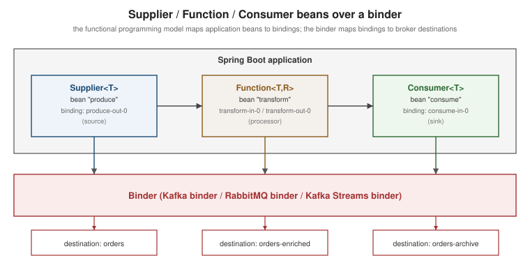

Spring Cloud Stream
|
This content was generated with the assistance of AI and should be verified against the official documentation before being relied on in production. |
Spring Cloud Stream sits one layer above the plain messaging clients covered on
Kafka Producers, Kafka
Consumers, RabbitMQ Publishing, and
RabbitMQ Consuming: instead of wiring a KafkaProducer,
KafkaConsumer, or an AMQP channel directly, an application declares ordinary java.util.function.Supplier,
Function, and Consumer beans and lets a binder connect them to a broker. The same application code runs
against Kafka, Kafka Streams, or RabbitMQ (or several at once) purely by swapping which binder starter is on the
classpath and how the binding is configured — nothing in the bean itself names a broker. This page assumes
Spring Boot 4.1.x, Spring Cloud Stream 5.0.x, Apache Kafka 4.3.x, and RabbitMQ 4.3.x throughout. For the
lower-level alternative — talking to a broker’s native Spring client directly instead of through a binder — see Spring Boot: Apache Kafka and Spring Boot: RabbitMQ; this
page is the Cloud Stream counterpart to both.
The binder abstraction and the functional application model
A binder is the component that implements Spring Cloud Stream’s abstractions for a specific messaging system — it turns a binding (an application-side Supplier/Function/Consumer) into whatever that broker actually
needs: a Kafka topic and consumer group, a set of RabbitMQ queues and bindings, or a Kafka Streams topology
built with the Kafka Streams binder. Which binder is in play is determined entirely by which
spring-cloud-stream-binder-* starter (spring-cloud-starter-stream-kafka, spring-cloud-starter-stream-rabbit,
or spring-cloud-starter-stream-kafka-streams) is on the classpath; the application code does not change.
The current, and only supported, programming model exposes each unit of work as a functional bean:
@Bean
public Supplier<Order> orders() {
return () -> nextOrder(); // polled on a fixed interval, default every second
}
@Bean
public Function<Order, EnrichedOrder> enrichOrder() {
return order -> enrich(order);
}
@Bean
public Consumer<EnrichedOrder> archiveOrder() {
return order -> archive(order);
}A Supplier is a source (polled by the framework, not invoked by an inbound message), a Function is a
processor (one inbound binding, one outbound binding), and a Consumer is a sink (inbound only, no
outbound). Which of the application’s beans Spring Cloud Stream actually binds is controlled by
spring.cloud.function.definition — leaving it unset works only when exactly one qualifying bean exists, so it
is worth setting explicitly once an application has more than one candidate:
spring:
cloud:
function:
definition: enrichOrderFunctions compose with the pipe (|) operator, letting several beans act as one binding pair without an
intermediate hop through the broker:
spring:
cloud:
function:
definition: enrichOrder|validateOrderEach bound function gets binding names derived from its bean name and argument position — enrichOrder-in-0/enrichOrder-out-0 for the Function above, orders-out-0 for the Supplier,
archiveOrder-in-0 for the Consumer — and every other binding-scoped property hangs off that name:
spring:
cloud:
stream:
bindings:
enrichOrder-in-0:
destination: orders
group: order-enrichment
enrichOrder-out-0:
destination: orders-enricheddestination names the broker-side target (a Kafka topic or a RabbitMQ exchange); group names the
consumer group an input binding belongs to. Instances sharing the same group value compete for messages the
same way plain Kafka consumers in the same group.id do — see
Kafka Consumers for that underlying mechanic — while an input
binding left without a group is assigned an anonymous, single-member group of its own and behaves as an
independent publish-subscribe subscriber instead of a competing consumer. Composed and multi-argument functions
can also have their generated binding names overridden to something more descriptive:
spring:
cloud:
stream:
function:
bindings:
enrichOrder|validateOrder-in-0: ordersIn
bindings:
ordersIn:
destination: ordersThe figure below shows the same shape: Supplier, Function, and Consumer beans each bound to a broker
destination through the binder layer.

See Spring Cloud Stream Reference — Programming Model and Spring Cloud Stream Reference — Producing and Consuming Messages for this section.
Partitioning and consumer groups
Partitioning lets related messages — all events for the same customer, say — land on the same consumer instance even when several instances share a consumer group, which matters whenever processing is stateful across messages. On the producer side:
spring:
cloud:
stream:
bindings:
enrichOrder-out-0:
producer:
partition-key-expression: headers.customerId
partition-count: 6partitionKeyExpression is a SpEL expression evaluated against the outbound message to derive the key
(partitionKeyExtractorName, naming a PartitionKeyExtractorStrategy bean, is the code-based alternative), and
partitionCount is the number of partitions the key is hashed across. On the consumer side, each instance must
be told its own position:
spring:
cloud:
stream:
bindings:
enrichOrder-in-0:
consumer:
partitioned: true
instance-index: ${INSTANCE_INDEX}
instance-count: 6instanceIndex (this instance’s zero-based position) and instanceCount (the total number of instances) are
what a binder without native partition-awareness — RabbitMQ, which has to materialize one queue per partition — uses to work out which partition(s) an instance should read; the Kafka binder can instead defer entirely to
Kafka’s own partition assignment when autoRebalanceEnabled is left at its default. See
Kafka Producers for how Kafka’s own partitioning and keys work
underneath this. Reference:
Spring Cloud Stream
Reference — Consumer Groups and
Spring Cloud
Stream Reference — Partitioning.
StreamBridge for imperative sends
Not every outbound message originates from a Supplier being polled — a REST controller reacting to a
request, for instance, needs to send on demand. StreamBridge covers that case:
@RestController
class OrderController {
private final StreamBridge streamBridge;
OrderController(StreamBridge streamBridge) {
this.streamBridge = streamBridge;
}
@PostMapping("/orders")
ResponseEntity<Void> submit(@RequestBody Order order) {
streamBridge.send("orders-out-0", order);
return ResponseEntity.accepted().build();
}
}streamBridge.send(bindingName, payload) sends through an existing or dynamically created binding; an overload
also accepts an explicit target binder name (useful once more than one binder is configured) and a MimeType to
pin the content type for that one send. A binding StreamBridge creates dynamically, rather than one declared
through spring.cloud.function.definition, is cached (spring.cloud.stream.dynamic-destination-cache-size,
default 10) rather than recreated on every call. Reference:
Spring
Cloud Stream Reference — Producing and Consuming Messages.
Content-type negotiation
Every message crossing a binding carries (or is assigned) a content type, and Spring Cloud Stream negotiates
between what a message declares and what a target Function’s argument type expects, converting automatically
with a built-in or user-supplied `MessageConverter — a String payload with content type application/json
arriving at a Function<Order, …> argument is deserialized before the bean ever sees it, and the reverse
conversion happens on the way out. The default content type, application/json, can be overridden per binding
with spring.cloud.stream.bindings.<name>.content-type, and StreamBridge.send(…, MimeType) can pin it for a
single imperative send as shown above. Reference:
Spring
Cloud Stream Reference — Producing and Consuming Messages.
Error handling: retry and dead-lettering
Spring Cloud Stream retries a failing consumer invocation locally, in-process, before doing anything
broker-specific: spring.cloud.stream.bindings.<name>.consumer.max-attempts (default 3) caps the number of
attempts, with back-off-initial-interval, back-off-multiplier, and back-off-max-interval shaping the delay
between them. What happens once those attempts are exhausted is binder-specific.
Kafka binder
The Kafka binder can route an exhausted message to a dead-letter topic instead of dropping it, via a binder-specific consumer property:
spring:
cloud:
stream:
bindings:
enrichOrder-in-0:
group: order-enrichment
consumer:
max-attempts: 3
kafka:
bindings:
enrichOrder-in-0:
consumer:
enable-dlq: true
dlq-name: orders.dlqNote the property’s location: enableDlq (equivalently enable-dlq under Spring Boot’s relaxed binding) sits
under the Kafka-binder-specific spring.cloud.stream.kafka.bindings.<name>.consumer namespace, not the
generic spring.cloud.stream.bindings.<name>.consumer one that max-attempts uses — a distinction worth
double-checking against the current binder reference, since the exact key has moved across major Cloud Stream
versions. A binding must have an explicit consumer group for enableDlq to apply; an anonymous binding cannot
use it. Left unnamed, the dead-letter topic defaults to error.<destination>.<group>; dlqName overrides that.
Reference:
Spring Cloud Stream
Reference — Kafka Binder Overview.
Kafka Streams binder
The Kafka Streams binder builds a Kafka Streams topology directly from Function<KStream<K,V>, KStream<K,V>>
(and KTable/GlobalKTable) beans rather than message-at-a-time bindings, so retry/DLQ configuration is not the
same shape as the plain Kafka binder’s — deserialization failures in particular are handled through a
dedicated deserialization-exception handler rather than the consumer retry properties above. See
Kafka Streams for the underlying topology and processor concepts this
binder wraps. Reference:
Spring Cloud
Stream Reference — Kafka Streams Binder Overview.
RabbitMQ binder
The RabbitMQ binder’s equivalent property is autoBindDlq, under its own binder-specific consumer namespace:
spring:
cloud:
stream:
bindings:
enrichOrder-in-0:
group: order-enrichment
consumer:
max-attempts: 3
rabbit:
bindings:
enrichOrder-in-0:
consumer:
auto-bind-dlq: true
republish-to-dlq: truespring.cloud.stream.rabbit.bindings.<name>.consumer.autoBindDlq makes the binder declare a dead-letter
exchange and queue alongside the main queue and wire the main queue’s dead-letter arguments to it; the
dead-letter queue is named <destination>.<group>.dlq by default. republishToDlq (also binder-specific) makes
the binder itself republish the failed message with diagnostic headers (such as the exception stack trace)
instead of relying on RabbitMQ’s native dead-lettering of a rejected/expired message, and works even with
max-attempts set to 1. This sits on top of the queue types, exchange bindings, and dead-lettering mechanics
covered on RabbitMQ Consuming and
RabbitMQ Queue Types — the binder is automating what those
pages describe doing by hand. Reference:
Spring Cloud Stream Reference — RabbitMQ Binder Overview.
The test binder
spring-cloud-stream-test-binder replaces the real binder with an in-JVM one for tests, so bindings can be
exercised without a running Kafka or RabbitMQ broker:
@SpringBootTest
@Import(TestChannelBinderConfiguration.class)
class OrderEnrichmentTests {
@Autowired
private InputDestination input;
@Autowired
private OutputDestination output;
@Test
void enrichesOrder() {
input.send(new GenericMessage<>("{\"id\":1}".getBytes()), "enrichOrder-in-0");
Message<byte[]> result = output.receive(1000, "enrichOrder-out-0");
assertThat(result.getPayload()).isNotEmpty();
}
}InputDestination pushes test messages into a named binding as if the broker had delivered them; OutputDestination
lets the test pull whatever the application published to a named output binding. Reference:
Spring
Cloud Stream Reference — Test Binder.
Removed in 4.0: the annotation-based model (historical only)
Spring Cloud Stream 4.0 removed the older annotation-based programming model entirely: @EnableBinding,
@StreamListener, @Input, @Output, and the marker interfaces Source, Processor, and Sink no longer
exist in any Spring Cloud Stream version this page covers. That model — declaring a Source/Sink/Processor
interface, annotating a class with @EnableBinding, and handling messages in a @StreamListener-annotated
method — predates the functional model described above and must not be treated as current practice: every code
example on this page uses Supplier/Function/Consumer beans, which is the only model Spring Cloud Stream 4.x
and 5.x support. An application still running the old annotations has to be migrated to functional beans before
it can move past Spring Cloud Stream 3.x; see the migration guide referenced below for the concrete steps.